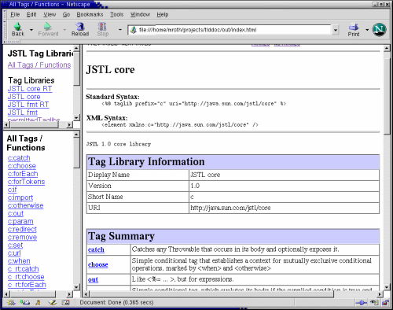

Tag Library Documentation Generator 1.3 |
Tag Library Documentation Generator is a utility for automatically generating javadoc-style documentation for JavaServer PagesTM (JSPTM) Technology Tag Libraries. It accepts a set of tag libraries as input, and generates a set of HTML files as output.
- Project Name: Tag Library Documentation Generator
- Latest Release: 1.3
- Latest Release Status: Production
- Project Type: Tool
Included in the output is a full description of each defined tag library, the tags contained within those tag libraries, and how to use those tags.
- Tag Library Repository
- Screenshot
- Download and Installation
- Features
- Building From Source
- Usage Instructions
- Support
- Revision History
We're attempting to produce a comprehensive collection of tag libraries and their corresponding documentation on the Wiki page for this project. Please consider adding your tag library to the Wiki once you've generated and posted your documentation.Visit the Tag Library Repository Wiki.

You can download the latest binary build from the Files Section on java.net.
Tag Library Documentation Generator has the following features:
- Cross-platform, implemented using JavaTM technology.
- Uses stylesheets, so output is easy to customize.
- Pluggable XSLT templates enable alternate look and feel.
- Works with JSP 1.1, JSP 1.2, JSP 2.0 and JSP 2.1 TLDs
- Support for the new deferred variable and method features in JSP 2.1 in both TLDs and tag files
- Enhanced support for JSP 2.0 Tag Files
- Flexible command-line interface allows you to generate documentation for a single TLD file, a set of TLD files, a JAR file, a WAR file, a directory of tag files, or all the tag libraries in a web application.
- Produces output that is familiar, easy to read, and easy to navigate.
- Generates sample taglib directives to copy & paste into code.
To build Tag Library Documentation Generator, follow these steps:
- Download and install
ant1.5.1 or greater from http://ant.apache.org/.- Download and install
JavaCC3.2 on your system. You can downloadJavaCChere: http://javacc.dev.java.net/- Check out the
taglibrarydocsource code from java.net. You can do so here: http://taglibrarydoc.dev.java.net/source/browse/taglibrarydoc/- Change your directory to
taglibrarydocand copy thebuild.properties.sampletemplate tobuild.properties.- Edit
build.propertiesand setJAVACC_HOMEto the directory in which you installedJavaCC.- Run '
ant dist'. Adistdirectory will be created withtlddoc.jar.- Try a test run with '
ant test'. Aoutdirectory will be created with documentation for all the tag libraries in thetestcases/directory.- See the following instructions for how to use the Tag Library Documentation Generator.
To use the Tag Library Documentation Generator, first, build the tool using the above instructions or download a precompiled binary, and make sure you can run it. Then, follow the instructions below. The first set of instructions assumes you are using JDK 1.4 or JDK 5.0. Instructions for running with JDK 1.3 are included below.Generating Tag Library documentation
First, locate the tag libraries you wish to generate documentation for. You can generate documentation for a single TLD file, a set of TLD files, a JAR file, a WAR file, a directory of tag files, or all the tag libraries in a web application. Then, simply invoke as follows:java -jar tlddoc.jar -d <outdir> <tlds>Where <outdir> is the directory in which to produce the output and <tlds> is the list of files or directories to examine. The -doctitle and -windowtitle options can be used to customize the title for the index and the browser window title, respectively. You can run with -help to list all options.Customizing the Output
The look and feel of the output can be customized. The generator collects all the information from various tag libraries into a single XML document, annotates it in various ways, and then runs that document through a number of XSLT stylesheets to produce the final output. You can edit or replace the XSLT stylesheets to change how the output looks or the way it is structured. To do this, first extract the contents of tlddoc.jar to an empty directory. Then, edit the files in com/sun/tlddoc/resources/* to change the output. Finally, run with the -xslt option, pointing to the directory with the modified files. For any file that does not appear in the directory pointed to by -xslt, the default file will be used instead.Running With JDK 1.3
The Tag Library Documentation Generator uses the JAXP APIs that are included in JDK 1.4 / JDK 5.0. However, it is also possible to run with JDK 1.3. To invoke using JDK 1.3 on Unix, type:java -classpath tlddoc.jar:xml-apis.jar:xercesImpl.jar:xalan.jar com.sun.tlddoc.TLDDoc -d <outdir> <tlds>Or on Windows, use semi-colons (';') instead of colons (':'):java -classpath tlddoc.jar;xml-apis.jar;xercesImpl.jar;xalan.jar com.sun.tlddoc.TLDDoc -d <outdir> <tlds>You can obtainxml-apis.jar,xercesImpl.jarandxalan.jarfrom the Xalan 2.5.1 release which can be downloaded here. Thanks to Doug Kenyon from ATG for sending this tip on how to run with JDK 1.3!Running With Ant
You can run the Tag Library Documentation Generator in ant as part of your build process using the<java>task. Just add the following code to yourbuild.xml.Using JDK 1.4, JDK 5.0, or greater:
<java fork="true" jar="${tlddoc.path}/tlddoc.jar" failonerror="true"> <arg line="-d ${build}/taglibs/doc"/> <arg value="${src}/taglibs/tld/my1.tld"/> <arg value="${src}/taglibs/tld/my2.tld"/> <arg value="${src}/taglibs/tld/my3.tld"/> </java>Or, using JDK 1.3:<java fork="true" classname="com.sun.tlddoc.TLDDoc" failonerror="true"> <arg line="-d ${build}/taglibs/doc"/> <arg value="${src}/taglibs/tld/my1.tld"/> <arg value="${src}/taglibs/tld/my2.tld"/> <arg value="${src}/taglibs/tld/my3.tld"/> <classpath> <pathelement location="${tools.lib}/tlddoc.jar"/> <pathelement location="${tools.lib}/xml-apis.jar"/> <pathelement location="${tools.lib}/xercesImpl.jar"/> <pathelement location="${tools.lib}/xalan.jar"/> </classpath> </java>
Tag Library Documentation Generator is a community-supported open-source product. You can find support by subscribing to the various mailing lists offered in this java.net project. Also, see the FAQ.
- Version 1.3 - December 4, 2005
- [Issue 12]: Support for JSP 2.1 TLD schema.
- Support for new JSP 2.1 TLD elements, including:
- deferred value attributes, and associated type
- deferred method attributes, and associated signature
- Version 1.2 - November 10, 2004
- [Issue 2]: Now supports CDATA-escaped HTML tags in any JSP 1.1 info or JSP 1.2 / JSP 2.0 description tag.
- [Issue 4]: Fixed a bug that prevented taglibrarydoc from working with JDK 5.0.
- Note: If you have any customized stylesheets you will have to regenerate them for this release. For the most part, you just have to add the j2ee: prefix when referring to the input source. See the default stylesheets for details.
- Version 1.1 - February 16, 2003
- Open source release to java.net.
- Updated JSP 1.2 to JSP 2.0 TLD conversion logic to always supply body-content element, which is now mandatory.
- Now omits empty tag libraries.
- Fixed bug: Default attribute type in tags and tag files now takes fragment attribute into account.
- Version 1.0 - March 27, 2003
- Initial release to Cool Stuff with full support for JSP 2.0 Technology.
- Version 0.1 - December 19, 2002
- Internal release.